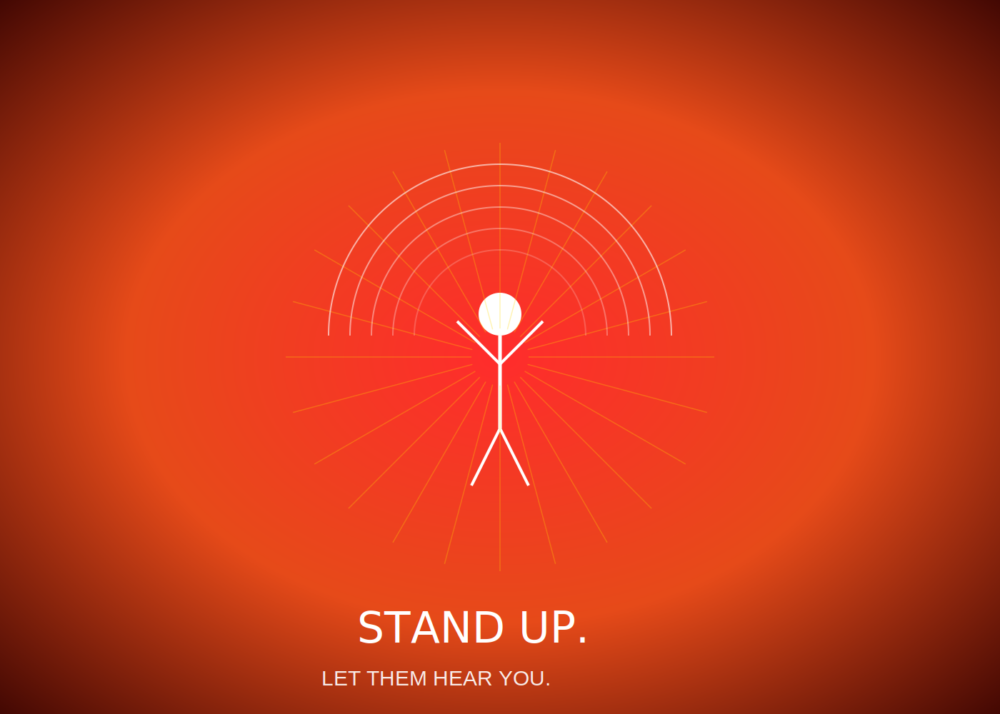
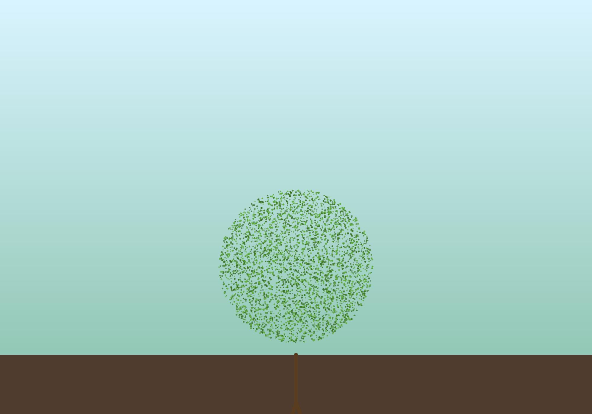
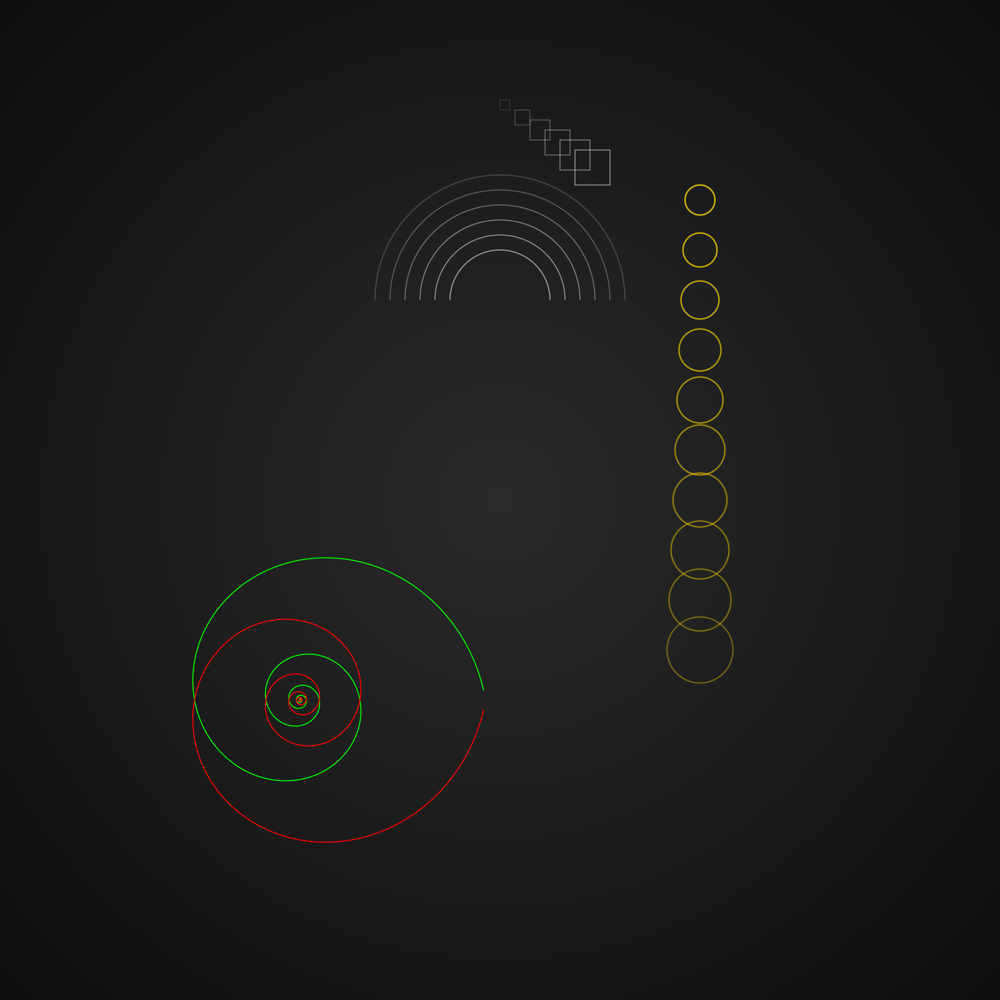

ORIGIN Version History
ORIGIN v5.1 – “Vector Soul”
March 21, 2025
- Photorealistic vector tree engine
- High-fidelity SVG generation (1MB+ outputs)
- Symbolic-to-structural logic applied in compositions
- Architectural and gestural layout systems refined
- 300 PPI raster rendering for all art
ORIGIN v4.8 – “The Spiral Awakens”
March 21, 2025
- Golden spiral + Fibonacci layout engine
- Depth layering and parallax in SVG
- Introduction of political-style graphic generation
ORIGIN v4.0 – “Emergence”
March 21, 2025
- First human-centric symbolic figures
- Intentional SVG scene composition
- Basic atmospheric gradients and radial lighting
Full Image Archive
1. DOJ Seal
The Department of Justice Seal recreated with SVG precision.

2. Political Energy Piece
A bold, red-driven composition inspired by political poster designs.
{kind=link}
3. Photorealistic Tree
A high-fidelity vector tree using fractal branching and layered leaf placement.
{kind=link}
4. High-Fidelity ORIGIN Remake
A detailed SVG-based re-creation of your original raster image, pushing vector limits.
{kind=link}